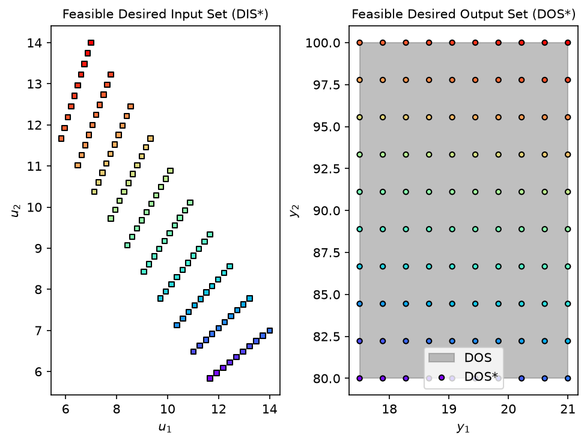

from opyrability import nlp_based_approach
import numpy as np
import time
def shower2x2(u):
y = np.zeros(2)
y[0]=u[0]+u[1]
if y[0]!=0:
y[1]=(u[0]*60+u[1]*120)/(u[0]+u[1])
else:
y[1]=(60+120)/2
return y
u0 = np.array([0, 10])
lb = np.array([0, 0])
ub = np.array([100,100])
DOS_bound = np.array([[17.5, 21.0],
[80.0, 100.0]])
DOSresolution = [10, 10]
t = time.time()
fDIS, fDOS, message = nlp_based_approach(shower2x2,
DOS_bound,
DOSresolution,
u0,
lb,
ub,
method='ipopt',
plot=True,
ad=False,
warmstart=False)
elapsed = time.time() - t
******************************************************************************
This program contains Ipopt, a library for large-scale nonlinear optimization.
Ipopt is released as open source code under the Eclipse Public License (EPL).
For more information visit https://github.com/coin-or/Ipopt
******************************************************************************
